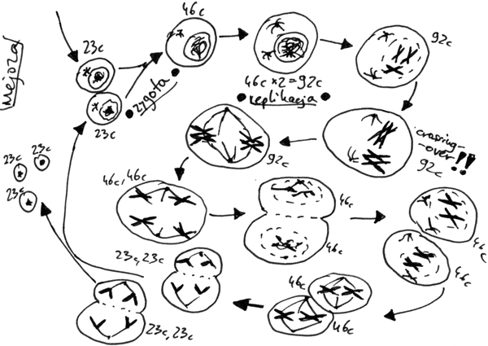
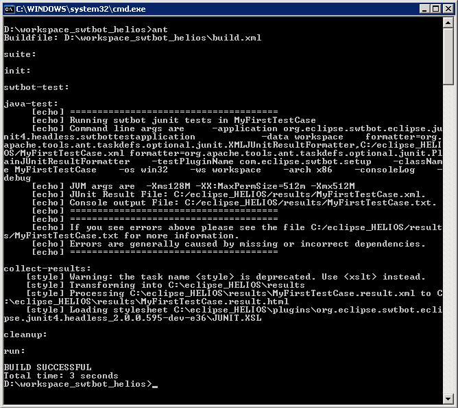
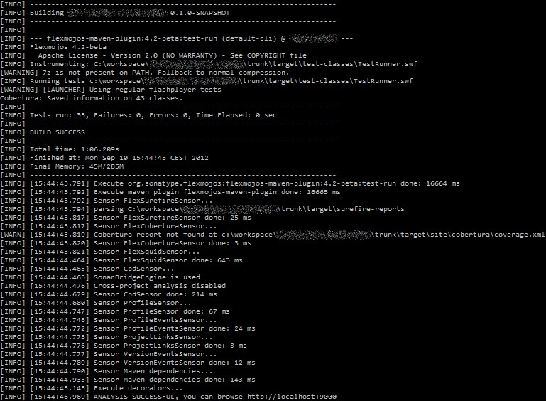

Automatização de builds com Maven e Gradle
Autor:Alexssandro A. Reis / @alereis
O processo de build
- Compilação
- Empacotamento
- Distribuição
Como eram feitos?
Os builds eram feitos de forma manual.
Propenso a erros
Tedioso
Demorado

Complicado

Exemplo
javac Compute.java Task.java
mkdir target
cd target
cp ../*.class .
jar cvf compute.jar *.class
tar -zcf compute.tar comput.jar
scp -i key user:pass@host.com:/home/user/deploy
Apache Ant
Pontos positivos
- Execução de tarefas
- Extensível
- Externaliza suas configurações
- Integração com ferramentas de CI
Pontos negativos
- Utilização de descritor XML
- Tratamento de exceção limitado
- Gerenciamento de dependências de forma manual
Arquivo build.xml
<project name="myProject" default="build" basedir=".">
<description> My Project's Description </description>
<property name="build" location="build" />
<target name="init">
<mkdir dir="${build}" />
</target>
<target name="clean">
<delete dir="${build}" />
</target>
</project>
Exemplo de execução
Apache Maven

Pontos positivos
- Extensível através de plugins
- Externaliza suas configurações
- Integração com ferramentas de CI
- Gerenciamento de dependências
- Suporte a múltiplos módulos de forma fácil
- Execução de testes
- Integração com ant
- Comunidade ativa
Pontos negativos
- Utilização de descritor XML
- Aprendizagem demorada se comparado ao Ant
- Repositórios privados não são seguros
- Ciclo de vida limitado
Estrutura do projeto
|-- pom.xml
`-- target
`-- src
|-- main
| `-- java
| `--pacote
| `-- App.java
`-- test
`-- java
`-- pacote
`-- AppTest.java
A pasta .m2
Contém todas as dependências já baixadas pelo maven
pom.xml (Project Object Model)
<project>
<modelVersion />
<groupId />
<artifactId />
<version />
</project>
Dependências
<dependencies>
<dependency>
<groupId />
<artifactId />
<version />
<scope />
</dependency>
</dependencies>
Plugins
<plugins>
<plugin>
<groupId />
<artifactId />
<version />
<executions>
<execution>
<phase />
<goals>
<goal />
</goals>
</execution>
</executions>
</plugin>
</plugins>
Distribuição
<distributionManagement>
<repository>
<id />
<url />
</repository>
<snapshotRepository>
<id />
<url />
</snapshotRepository>
</distributionManagement>
Repositórios
<repositories>
<repository>
<id />
<url />
</repository>
</repositories>
Execução de builds
mvn clean package deploy
Exemplo de console

Gradle

Pontos positivos
- Extensível através de plugins
- Externaliza suas configurações
- Integração com ferramentas de CI
- Gerenciamento de dependências
- Suporte a múltiplos módulos de forma fácil
- Execução de testes
- Integração com ant
- Utilização de scripts Groovy
Pontos negativos
- Peformance
Estrutura do projeto
|-- settings.gradle
`-- build.gradle
`-- gradle
|-- wrapper
|-- gradle-wrapper.jar
`-- gradle-wrapper.properties
`-- src
|-- main
| `-- java
| `-- pacote
| `-- App.java
`-- test
`-- java
`-- pacote
`-- AppTest.java
build.gradle
apply plugin: 'java'
sourceCompatibility = 1.5
version = '1.0'
repositories {
mavenCentral()
}
dependecies {
compile group: 'groupId', name: 'artifactId', version: 'version'
testCompile group: 'groupId', name: 'artifactId', version: 'version'
}
Dependências
dependecies {
compile group: 'groupId', name: 'artifactId', version: 'version'
testCompile group: 'groupId', name: 'artifactId', version: 'version'
}
Repositórios
repositories {
mavenCentral()
maven {
url "http://repo.mycompany.com/maven2"
}
ivy {
url "http://repo.mycompany.com/repo"
}
}
Tarefas
task hello << {
println 'Hello world!'
}
task intro(dependsOn: hello) << {
println "I'm Gradle"
}
BY Hakim El Hattab / hakim.se
Plugins
apply plugin: 'java' //binários
apply from: 'other.gradle' //scripts
Deploy
apply plugin: 'maven'
uploadArchives {
repositories {
mavenDeployer {
repository(url: "file://localhost/tmp/myRepo/")
}
ivy {
credentials {
username "username"
password "pw"
}
url "http://repo.mycompany.com"
}
}
}